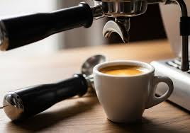
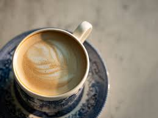

Klasični Espresso
Osnova svake dobre kafe
Koncentrovani oblik kafe koji se poslužuje u malim, jakim dozama. Predstavlja bazu za većinu drugih napitaka od kafe. Otkrijte pravu aromu.

Koncentrovani oblik kafe koji se poslužuje u malim, jakim dozama. Predstavlja bazu za većinu drugih napitaka od kafe. Otkrijte pravu aromu.

Popularni napitak od kafe koji potiče iz Italije, a priprema se od jednakih dijelova espressa, toplog mlijeka i bogate mliječne pjene.